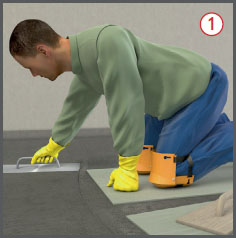
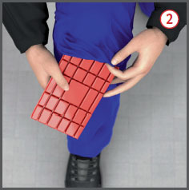
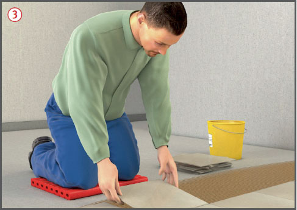

 |
 |
Gefährdungen
- Durch ständige kniende Haltung ohne Polsterung besteht eine Gefährdung für die Knie und den Bewegungsapparat.
- Kniende Tätigkeiten können zur Erkrankung der Schleimbeutel, der Menisken, zur Gonarthrose und zur Druckschädigung der Nerven führen.
Auswahl / Benutzung
- Knieschutz soll die auftretenden Kräfte gleichmäßig verteilen und Verletzungen durch den Untergrund und die zu verwendenden Stoffe und Arbeitsverfahren verhindern.
- Knieschutz kann vorhandene Schäden nicht korrigieren und nicht verhindern, dass durch langzeitiges knien medizinische Komplikationen auftreten.
- Kniende Tätigkeiten durch Hilfsmittel auf ein Minimum reduzieren, damit der Blutfluss in den Beinen nicht beeinträchtigt wird.
- Kniebelastende Tätigkeiten arbeitsorganisatorisch möglichst durch andere Körperhaltungen auflockern.
- Knieschutz in Abhängigkeit der Tätigkeit/des Untergrundes auswählen, wie z. B.:
- feuchter Untergrund:
Knie vor Nässe schützen.
- Unebenheiten:
Dicke des Knieschutzpolsters berücksichtigen.
- Bewegung:
Knieschutz darf bei den durchzuführenden Tätigkeiten nicht verrutschen.
- spitze, scharfe Gegenstände:
Schnittfestigkeit berücksichtigen.
- Nur CE gekennzeichnete, baumustergeprüfte Produkte zur Verfügung stellen.
- Knieschutz vor der Benutzung durch Inaugenscheinnahme prüfen und ggf. festgestellte Mängel melden.
- Nicht ordnungsgemäßer Knieschutz ist der Verwendung zu entziehen.
- Knieschutz gemäß Herstellerangabe reinigen.

Bauarten / Materialien
- Bei allen kniend auszuführenden Tätigkeiten Knieschutz tragen, wie z. B.:
- Typ 1: Knieschutz, der um das Bein befestigt wird
 .
.
- Typ 2: Knieschutz durch Polster in Verbindung mit Hosen,
 Kleidung (i.d.R. Hosen) und Polster wurden in Kombination geprüft, so dass diese zusammen zu verwenden sind.
Kleidung (i.d.R. Hosen) und Polster wurden in Kombination geprüft, so dass diese zusammen zu verwenden sind.
- Typ 3: Knieunterlagen
 .
.
07/2021